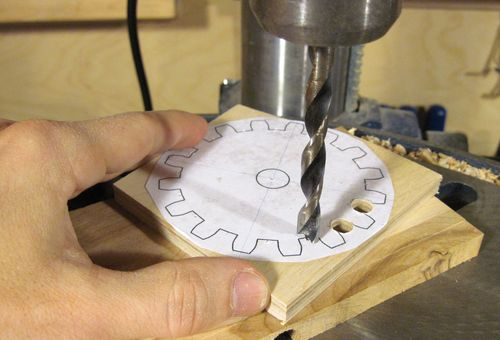
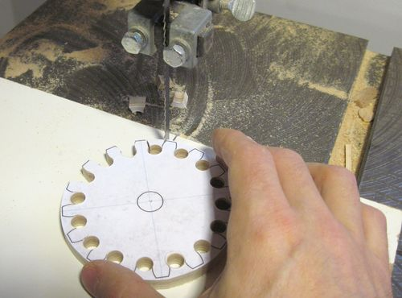
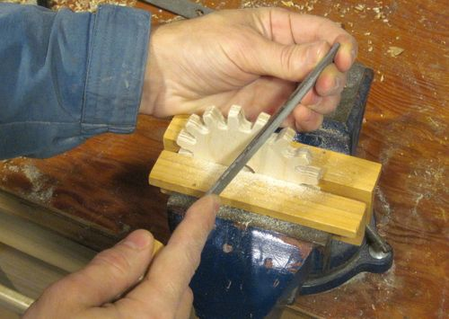
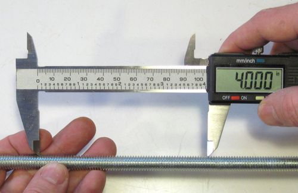
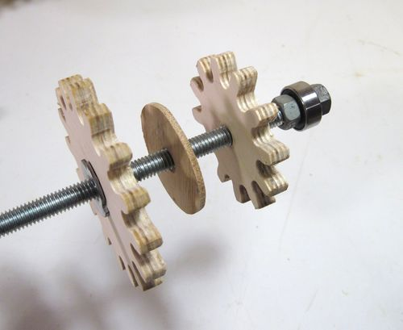
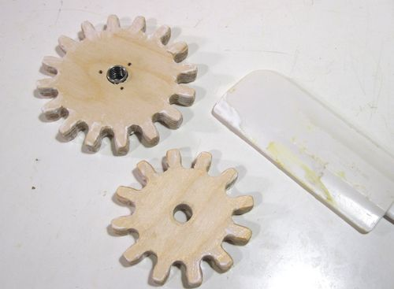
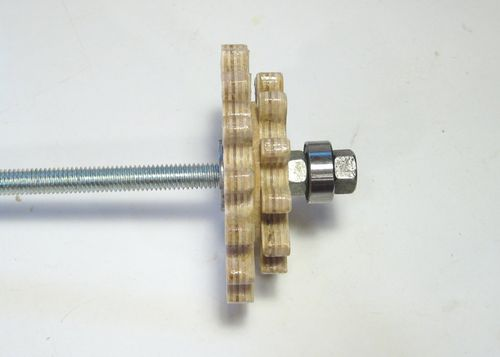
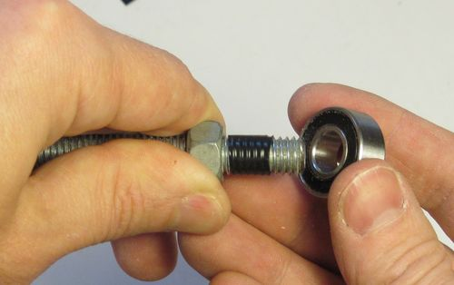
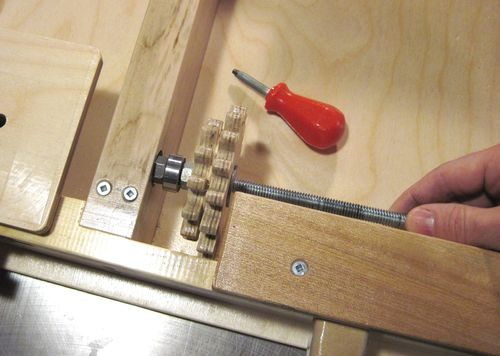

Building the secondary gear clusterYou can make the gear outlines by printing these templates The gear shapes were originally generated using my gear template generator. The parameters I used for the gears is a contact angle of 8 degrees, tooth spacing of 16.8 mm. You don't need to use that program however, as the necessary gear templates are included in the plans. Use the 12 and 16 tooth templates for the secondary gear that go on the threaded rod.
I glued the template onto a piece of 9 mm thick (23/64") baltic birch plywood.
The 11 mm thick (7/16") stock can also be used.
I used an awl to punch a center hole in the middle of the lines between
the gear teeth, but about 1 mm to the outside. I then used a 5/16" (8 mm)
drill and drilled holes between all the teeth. The holes are slightly larger than
the space between the teeth, but these gears never mesh that precisely at a
right angle so having a bit of extra space helps.
 After drilling the holes between the teeth, I made a circular cut around the gear and then cut out the pieces between the teeth. I cut on the line, so that the whole of the line is cut a way. It helps to tilt the bandsaw table to taper the teeth to be narrower towards the back with the table tilted right five degreees for the left side of the teeth and left five for the right side of the teeth. This will make it ieasier to mesh the gears and reduces the amount of filing necessary. Many bandsaw tables will also tilt left by a few degrees.
More on gear making in my
online article on woodgears.ca
 Using a metal file I tapered the teeth all a little bit to be narrower towards the side where the gears mesh wiht the primary gears. You may have to go back and do a little bit more filing after testing out the gears.
When doing the filing don't push against the gear on the pull stroke or
you end up tearing out the ply nearest to you as you on the pull stroke.
 The threads on threaded rods can be surprisingly inaccurate. Quite often, instead of 16 turns per inch, its actually around 16.1 If you are only using the box joint to make box joints, this slight discrepancy may not matter much. But if you use it for other purposes, such as to cut wide multiple tenon joints then it matters. The best way to check the rod is to take a digital caliper and jam the prongs into the threads one thread apart. Then zero the caliper and slide it apart until it reads 4". Then check if the prongs mesh with the threads as they did before. With some shopping around, I was able to find some threaded rod that just happened to be exact, although I had to settle for a 6 foot long section to get it.
For Metric countries, use an M10 threaded rod. An M10 threaded rod is close
in size to a 3/8" threaded rod and has 1.5 mm per turn. Open the calipers
to 75 mm instead of 4"

This is how the gears bearing and T-nut fit onto the shaft. I drilled
a 23/64" hole in the 12 tooth gear for the 3/8" threaded rod so the gear
itself fits tightly on the shaft. The larger gear has a hole in it
that is sized to snugly fit the neck of the T-nut in it. I pre-drilled
some holes for the prongs of the T-nut. The baltic birch plywood
is too firm to just pound the prongs straight in.
 After testing the gears against some primary gears for resaonable fit, I spread some glue on the surface of the secondary gear teeth. This helps to harden the surface a little and give them a little bit more resistance to wear. I have never had any wear issues on my jigs with gears like that, but it helps to be safe.
The glue I used is Weldbond. That glue retains some resilience after it
cures, which I think is good for this application.
 The assembled gear cluster. Because I was only using the 9 mm thick plywood I had to put a 2 mm thick spacer between the gears to leave enough room behind the teeth of the smaller gear. On my previous jig, I used 11 mm thick plywood so I didn't need the spacer. But having made the base out of 9 mm thick plywood I decided to use the same stock for the rest of the jig so that the materials list doesn't become overly complicated. The ball bearing has a 3/8" hole. On the 3/8" threaded rod, it has a little bit of play and often mounts a little bit crooked when clamped between two nuts. You can check this by holing the gear cluster and threaded rod assembly by the bearing and letting it hang down. Then give the shaft a twirl with your other hand. If you can feel the ball bearing wobble back and forth then it's on crooked.

If needed, a single turn of electrical tape wrapped tightly around the threads will
make it fit on very tight and cut down on wobble. You will need to cut a strip narrower
than the roll before wrapping it on so that the tape won't stick out past the bearing.

The space in the frame around the gear cluster is designed to be just large enough to allow
the gear cluster to be inserted. Once inserted the two screws on the piece
of wood that the bearing inserts into are tightened to lock the bearing in
place. It helps to slide the carriage in from the right and turn the threaded
rod a few turns into the carriage's T-nut before tightening the screws to
make sure it's aligned well.
|